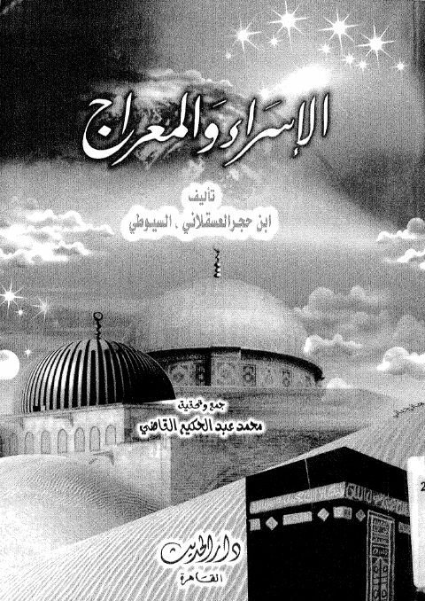
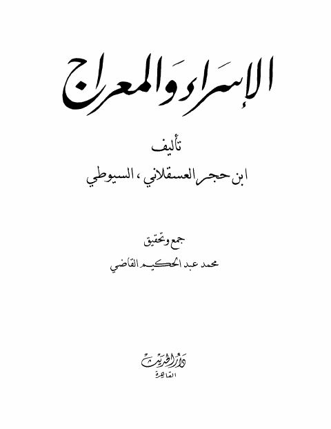
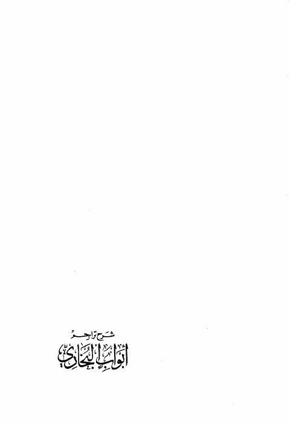
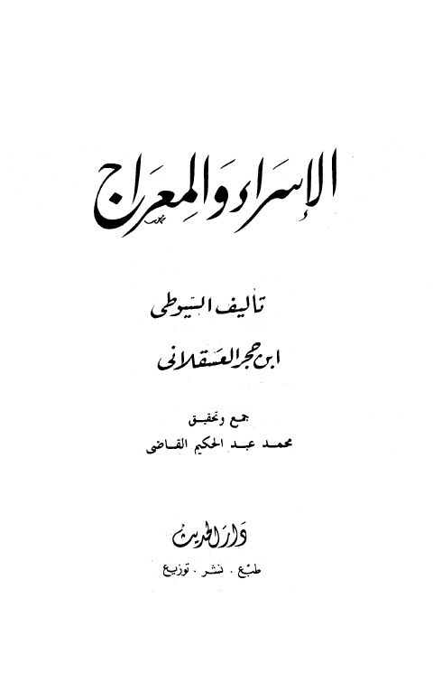

الإسراء والمعراج- ت. القاضي الإسراء والمعراج- ت. القاضي ابن حجر العسقلاني • السيوطي
الإسراء والمعراج الإسراء والمعراج جلال الدين عبد الرحمن السيوطي • أحمد بن علي بن حجر العسقلاني
شرح تراجم أبواب البخاري شرح تراجم أبواب البخاري شاه ولي الله دهلوي • أحمد بن علي بن حجر العسقلاني
الإسراء والمعراج- ت. القاضي الإسراء والمعراج- ت. القاضي ابن حجر العسقلاني • جلال الدين السيوطي